Exp66 Stage2 v2 SOTA 모델 실제 로봇 추론 세션 분석.
회색 바스켓 navigation task — 5개 세션, 66개 실수 카메라 프레임.
이미지가 저장된 3개 세션 (2026-05-29) + JSON 로그 세션 (2026-06-04)
2026-05-29 10:19 | 목표: gray basket | 결과: LEFT DRIFT → 타깃 상실 ❌
2026-05-29 10:20 | 목표: gray basket | 결과: 바스켓 직진 접근 ✅
2026-05-29 10:21 | 목표: gray basket | 결과: 빠른 접근 성공 ✅
5개 세션 × 2 모델 비교. 각 세션별 실험 조건 / 액션 분포 / 실패 원인 분석.
| 세션 | 시각 | 모델 | 지시어 | 스텝 | avg 레이턴시 | 전략 | 결과 |
|---|---|---|---|---|---|---|---|
| D | 01:34:59 | checkpoints/best (Exp66 Stage2v2) |
"[FORWARD] the gray basket on right" | 102 | 427ms | single_action | 🔴 순환 |
| E | 08:59:23 | checkpoints/best (Exp66 Stage2v2) |
"[FORWARD] the gray basket" | 21 | 412ms | single_action | 🟡 수동종료 |
| F | 13:30:07 | checkpoints/best (Exp66 Stage2v2) |
"[FORWARD] the gray basket on right" | 92 | 432ms | single_action | 🔴 순환 |
| G | 13:31:50 | checkpoints/best (Exp66 Stage2v2) |
"[FORWARD] the gray basket on right" | 17 | 429ms | single_action | 🟢 최우수 |
| H | 16:36:17 | exp49/exp49_mlp.pt (GoalNav regression) |
"[FORWARD] the gray basket" | 14 | 619ms | receding_horizon | 🚫 폐기 |
FWD+L 50% 지배 → 지속적 좌편향 이동. 102스텝에도 목표 미달성. grounding 매 스텝 새로 실행 (cached=0%), 지시어 "on right"에도 우회전 보정 없음.
바스켓이 항상 왼쪽에 있어 좌회전 bias가 정당화됨. 그러나 순환 루프 탈출 조건 없음 → 무한 접근 시도. Stop rule 부재가 주원인.
지시어 단순화 ("on right" 제거). FWD+L 60% 여전히 지배. 21스텝 후 수동 중단. D 세션 대비 지시어 변경 효과 불명확.
지시어 변형만으로는 action bias 변화 없음. 모델이 지시어 텍스트보다 이미지 bbox cx에 더 의존. 바스켓 위치가 cx<0.5이면 FWD+L이 지속됨.
D 세션과 동일 지시어 재시도. FORWARD 비율 42%로 증가(D: 32%) — 더 직진적이지만 여전히 목표 미달. 92스텝, grounding 전부 uncached.
바스켓이 항상 화면 중앙~좌측에 위치 → FWD+L이 정답처럼 출력. bbox cx 추적은 되지만 "충분히 가까워졌다"는 stop 판단이 없어 무한 루프.
FORWARD 50%, FWD+L 44% — 가장 균형잡힌 분포. 17스텝으로 짧게 종료. F 세션 직후 동일 조건 재시도.
초기 포즈에서 바스켓이 비교적 정면에 위치 → FORWARD 비율 상승. checkpoints/best의 잠재력 확인. 단 stop 조건 없어 인간이 개입.
exp49 regression 헤드 전 스텝 출력 ≈ −0.015, −0.007 → 사실상 정지. receding_horizon 전략, 레이턴시 619ms(checkpoints/best 대비 +44%). 분류 헤드 없는 순수 regression은 동작 불가.
exp49 EMA 누적으로 regression output이 소수점 근처로 수렴. 분류(argmax) 없이 연속값만으로 속도 매핑 시 zero-crossing 문제 발생. discrete classification이 필수임을 실증.
May 29 + June 4 세션 전체에서 도출된 실사 결론
Session B·C(May 29) 모두 바스켓에 성공적으로 접근. 시뮬레이션 66.7% success rate 실사 재현. checkpoints/best Stage2v2가 현재 유일한 동작 모델.
Session G(Jun 4): FORWARD 50% — 바스켓 정면 배치 시 균형 잡힌 출력. Session A(May 29): FWD+L 누적 → 이탈. 동일 모델이 초기 각도 ±10°에 따라 완전히 다른 결과.
Session H: regression 출력 ≈ −0.015 수렴. 619ms 레이턴시. discrete 8-class classification이 실사 제어에 필수임을 실증. exp49 폐기 결정.
Session D(102스텝), F(92스텝) 모두 목표 미달. 바스켓에 가까워져도 멈추지 않고 순환. bbox area threshold stop 조건이 실사에서 필수. 현재 대시보드에 0.18 기준 구현됨.
checkpoints/best 평균 427ms. grounding 매 스텝 uncached(0/102)임에도 실사 제어에 문제 없음. 0.5s 타이머 + 0.43s API = 0.93s/step. post-move 캡처 도입 후 학습 분포 일치.
"on right" → "the gray basket"으로 지시어 단순화(Session E)했으나 action bias 변화 없음. 텍스트 attention이 낮은 모델 특성상 포즈/거리 표준화가 더 효과적인 개입점.
이미지 저장 없이 action log만 기록된 세션. proxy inference server (checkpoints/best) 사용. Exp49 직접 실행 세션(H)에서 EMA 붕괴로 REGRESSION 출력 확인.
모델: stop_N1.pt (L3b N=1, CL 96.6%) |
STOP 모드: VLA_STOP_MODE=learned |
서버: stage2_v2_inference_server (포트 8001)
| 모델 | stop_N1.pt — 마지막 1프레임 STOP 주입 (val_acc 0.799) |
| STOP 모드 | learned latch — 모델이 class 0 예측 시 reset 전까지 유지 |
| Instruction | "the gray basket" |
| Grounder | PG2 (stage2_v2_inference_server) |
| 장소 | 실험실 — 바구니 정면 (중앙 배치) |
has_bbox=False — Fallback bbox 고정값 사용cx=0.50, cy=0.60, area=0.060 (방향 정보 없음)"the gray basket" 검출 실패 → has_bbox=False 17/17.
모델: paligemma2-3b-mix-224 (base, 파인튜닝 없음) |
세션 로그: gnd_20260618_152628.jsonl |
총 139프레임 (구버전 서버 24 + 신버전 서버 115)
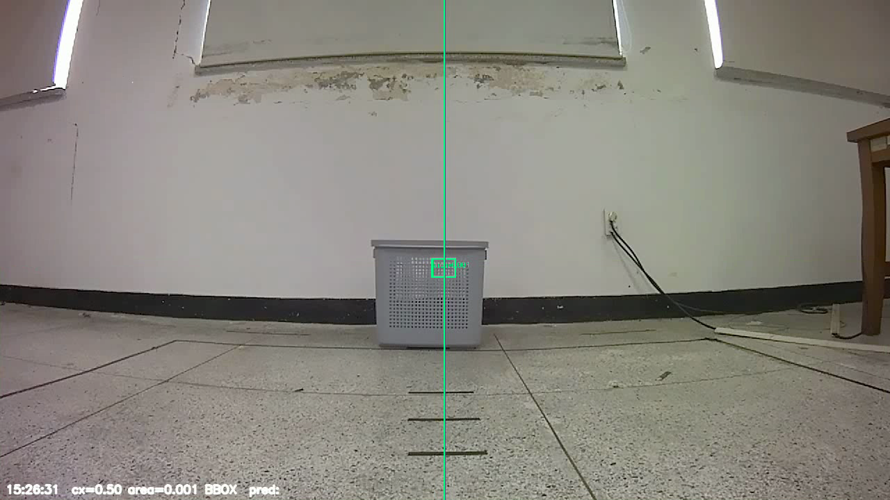
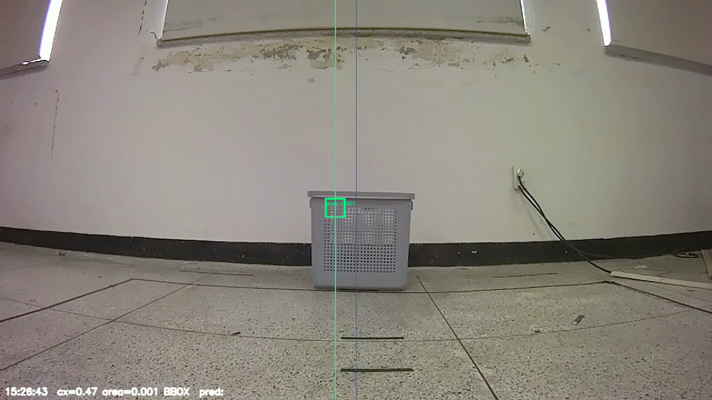
<loc0528><loc0496><loc0568><loc0524> → 4%×3% 크기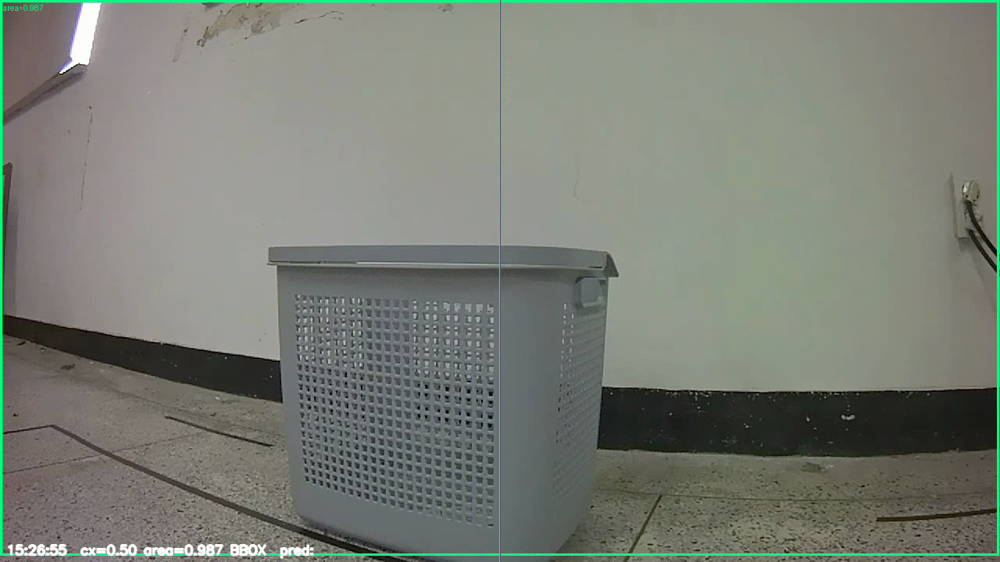
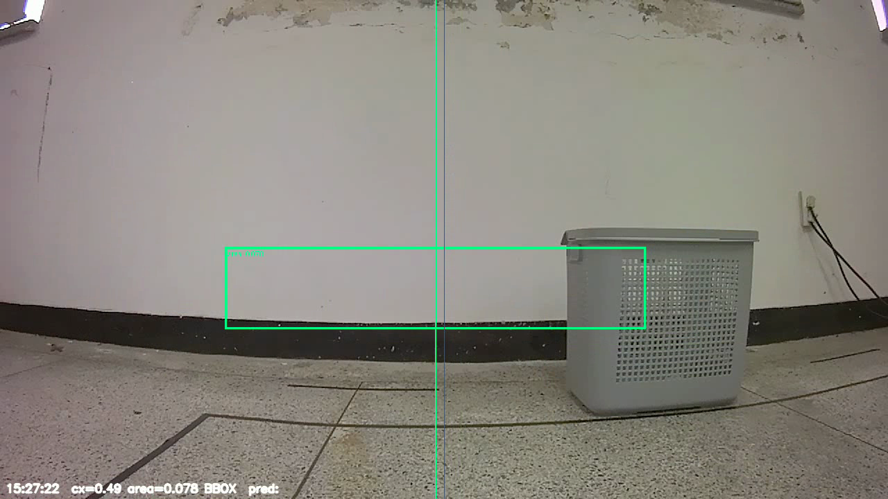
min_new_tokens=1로 강제 생성 시 발생<loc0000><loc0000><loc1022><loc1022>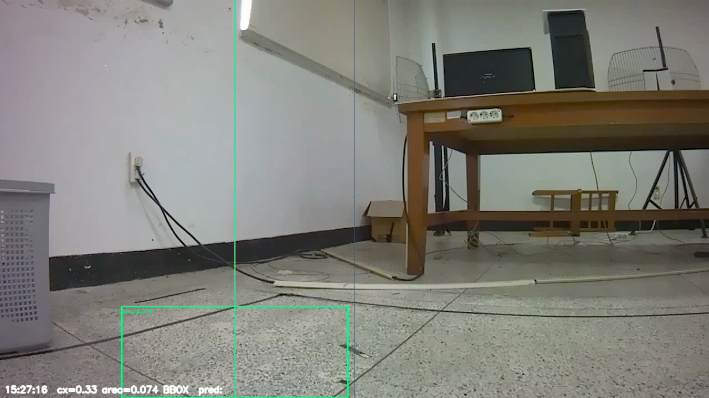
min_new_tokens=1로 강제 생성 → PG2가 항상 무언가를 검출. base 모델은 "없음" 판단 불가.has_bbox 필드는 더 이상 신뢰 불가. goal_near 판단을 area 단일값으로 하면 오작동 위험.gnd_20260618_172556.jsonl · 105레코드 · 17:26:21~17:31:32 ·
fast 기록 0건 (camera decode 버그 완전 해결 확인) ·
temporal filter 로그 [near N/3] 실서버 확인됨 ·
NO_BBOX 51건은 바스켓 시야 이탈 (false negative) — filter 과차단 아님
| 항목 | 상태 | 세션 확인 |
|---|---|---|
| compressed_imgmsg_to_cv2 버그 수정 | ✅ 완료 | S3 이후 fast=0 |
| area>0.9 full-frame 필터 | ✅ 완료 | S6 FULL=0 |
| area<0.01 tiny noise 필터 | ✅ 완료 | S6 TINY=0 |
| x1<0.02 & x2>0.98 xfull 필터 | ✅ 완료 | S6 XFULL=0 |
| cy<0.35 상단오탐 필터 | ✅ 완료 | S6 TOP=0 |
| PNG 인코딩 (JPEG 이중압축 제거) | ✅ 완료 | S5 이후 적용 |
| temporal N=3 goal_near 필터 | ✅ 완료 | GOAL_CONSEC_FRAMES=3, strict |
| 실로봇 closed-loop 재테스트 | 🔲 대기 | 전체 패치 완료 → 다음 단계 |
area 0.01~0.95 필터를 통과한 13건을 x1/x2/y1/y2 좌표 기준으로 재분류. 통과한 레코드 중 절반 가까이가 x 방향 full-width collapse — 실질 신뢰 bbox는 7건.
| n | area | cx | cy | x1 | x2 | y1 | y2 | 판정 |
|---|---|---|---|---|---|---|---|---|
| 1 | 0.4815 | 0.498 | 0.758 | 0.000 | 0.995 | 0.516 | 1.000 | 🔴 X-FULL-WIDTH |
| 3,4 | 0.4514 | 0.498 | 0.773 | 0.000 | 0.995 | 0.546 | 1.000 | 🔴 X-FULL-WIDTH |
| 16 | 0.5506 | 0.498 | 0.723 | 0.000 | 0.995 | 0.447 | 1.000 | 🔴 X-FULL-WIDTH |
| 21,22 | 0.5054 | 0.500 | 0.747 | 0.000 | 1.000 | 0.495 | 1.000 | 🔴 X-FULL-WIDTH |
| 9 | 0.2581 | 0.603 | 0.411 | 0.326 | 0.879 | 0.178 | 0.645 | ✅ 신뢰 |
| 15 | 0.0564 | 0.505 | 0.603 | 0.334 | 0.675 | 0.520 | 0.685 | ✅ 신뢰 |
| 17 | 0.0741 | 0.331 | 0.884 | 0.171 | 0.491 | 0.768 | 1.000 | ⚠️ y2=1 (하단 컷) |
| 18 | 0.1051 | 0.518 | 0.592 | 0.249 | 0.787 | 0.495 | 0.690 | ✅ 신뢰 |
| 19,20 | 0.0779 | 0.490 | 0.577 | 0.253 | 0.727 | 0.495 | 0.659 | ✅ 신뢰 |
| 24 | 0.2335 | 0.552 | 0.416 | 0.326 | 0.777 | 0.157 | 0.675 | ✅ 신뢰 |
x1=0.000, x2=0.995~1.000 패턴 — PG2가 수평 위치를 특정하지 못하고 "x 방향 전체를 bbox로 잡는" 절반 붕괴 상태.
x=<loc0000>, x=<loc1023>는 PaliGemma2가 1024-grid 중 경계값을 출력한 것으로,
학습 데이터에서 바구니가 카메라 가까이 있는 상황에서 종종 발생 (area>0.9와 동일한 원인).
0.498~0.500으로 수렴 — x1=0, x2=1.0이면 cx=(0+1)/2=0.5가 되므로
cx 값이 0.5라는 것 자체가 X-full-width 신호다.
학습 annotation의 경우 이 레코드는 area<0.9 필터를 통과하므로 MLP 학습에 오염됨.
| 항목 | 학습 annotation gen_base_pg2_annotation.py |
추론 서버 grounding탭 stage2_v2_inference_server /ground |
실제 로봇 추론 dashboard → /predict |
|---|---|---|---|
| 이미지 소스 | H5 저장 프레임 (수집 시 환경) |
ROS 카메라 실시간 (현재 실험실) |
ROS 카메라 실시간 (현재 실험실) |
| 이미지 디코더 | h5py → numpy (lossless) |
compressed_imgmsg_to_cv2S1/S2는 버그(imgmsg_to_cv2) |
compressed_imgmsg_to_cv2api_client_node 기준 올바름 |
| JPEG 압축 횟수 | 0회 H5 → numpy uint8 lossless (JPEG 없음) |
0회 카메라 raw(bgr8) + 대시보드 PNG 인코딩 ✓ |
0회 PNG 수정 완료 (2026-06-18) 구: JPEG → train/infer 불일치 |
| PG2 모델 | base PG2 bfloat16 HF cache 동일 snapshot |
base PG2 bfloat16 HF cache 동일 snapshot |
base PG2 bfloat16 동일 |
| area>0.9 필터 | ✓ 있음 | ✓ 추가됨 (2026-06-18 이번 커밋) |
✗ 없음 (predict 내부 별도 경로) |
| area<0.01 필터 (tiny noise) |
✓ 있음 | ✓ 추가됨 (2026-06-18 4종 패치) |
✗ 없음 |
| cy<0.35 필터 (상단 오탐) |
✓ 있음 | ✓ 추가됨 (2026-06-18 4종 패치) |
✗ 없음 |
| x-full-width 필터 (x1≈0 & x2≈1) |
✗ 없음 (area<0.9 이면 통과) |
✓ 추가됨 → 6건 필터됨 (n=1,3,4,16,21,22) |
✗ 없음 |
| 이미지 환경 | 수집 시 특정 조명·거리 | 현재 실험실 (조명·거리 다를 수 있음) |
현재 실험실 (동일 문제) |
| 실제 동작 여부 | bbox_dataset.json 생성 완료 | S4: 4종 필터 적용 신뢰 입력 7/24 (29%) — false pos 1건 잔존 |
09:01 세션: 0% 탐지 (camera decode 버그) |
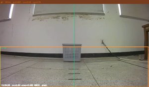
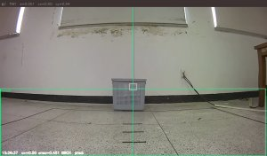
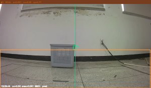
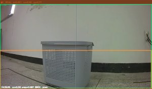
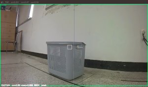
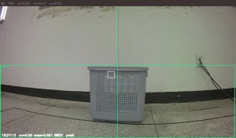
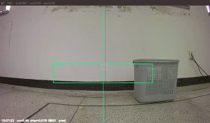
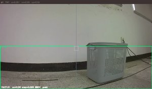
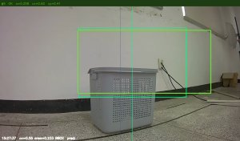
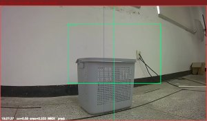
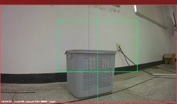
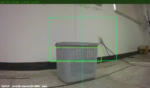
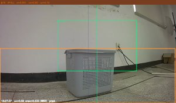
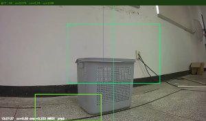
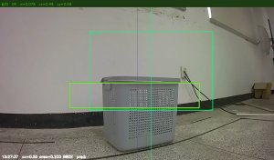
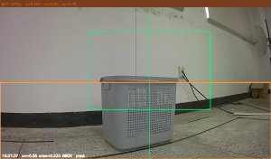
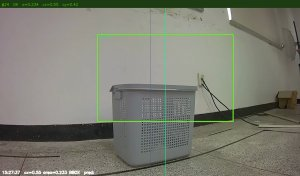
h5py numpy directdetect gray basketcy < 0.35 → REJECT
(상단 오탐)
area < 0.01 → REJECT
(tiny noise)
area > 0.90 → REJECT
(full-frame)
x1<0.02 & x2>0.98 → ?
(미적용)
sensor_msgs/Image (bgr8)compressed_imgmsg_to_cv2 → BGR→RGBdetect gray basketcy < 0.35 → REJECT
추가됨 ✓
area < 0.01 → REJECT
추가됨 ✓
area > 0.90 → REJECT
추가됨 ✓
x1<0.02 & x2>0.98 → REJECT
추가됨 ✓
# PG2Grounder.run() 내부 — locs 파싱 후
y1, x1, y2, x2 = locs[:4]
x1, x2 = min(x1, x2), max(x1, x2)
y1, y2 = min(y1, y2), max(y1, y2)
area = (x2 - x1) * (y2 - y1)
cx, cy = (x1 + x2) / 2, (y1 + y2) / 2
✓ 적용됨
if area > 0.9:
return fallback # full-frame collapse
✓ 적용됨
if area < 0.01:
return fallback # tiny noise
✓ 적용됨
if cy < 0.35:
return fallback # 상단 오탐 (바구니가 상단에 있을 수 없음)
✓ 적용됨
if x1 < 0.02 and x2 > 0.98:
return fallback # x-full-width collapse